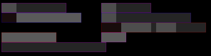

| Source | Status |
|---|---|
| https://github.com/dgurjar/GitStyle | In Development |
This project was originally made for Golan Levin’s Interactive Art and Computational Design course at CMU.
Programming style is a subjective term. There are only a few generally accepted guidelines that apply to a variety of languages. The rest are all dependent on the programming language, the community, and the individual. gitStyle was created to abstract code for understanding these guidelines and to visualize the evolution of files on GitHub.
I started off playing with the GitHub API to make sure that the project was feasible The API is still young, so it does have some restrictions. Realizing that only 60 requests could be made without authentication was a bummer, but results like the image above (retrieving code from a commit) gave me hope.
At this point I split my problem into two: data and visualization. I quickly coded the above visual as a simple test: given a syntax highlighter library and some code stored locally, visualize it abstractly. I liked the retro-ness and simplicity of the rectangles and stuck with them.
My original plan was to make a desktop experience. As far as data goes, I tried very hard to use a recommended Java library. The problem was that the library wasn’t very well documented, and the examples it provided weren’t useful. I spent some of time on this, but was getting nowhere.
I decided to switch to JavaScript since the GitHub libraries provided seemed more promising.I also knew that there were many syntax highlighting resources in JavaScript. Using some test code, I re-did my visual portion as seen below:
In had generated all of the boxes using HTML divs. Although this worked will with my small test cases, when I tried visualizing a larger sample there was a noticeable lag.

I made a switch to canvas at one point for efficiency. I had a bunch of troubles stemming from the library I was using to access GitHub. It was very inefficient in the way it made requests. Towards the end I ditched this library almost entirely, and decided to make requests manually using JQuery and AJAX.
At this point in the process I really solidified what information I wanted displayed in my visualization. The commit data I received had a ton of meta-data: the author, the dates, the type of syntax, etc. were all available. I decided here to look more into programmatic style and focus on these principles:
- Commenting
- Indentation
- General code structure
- Modularization